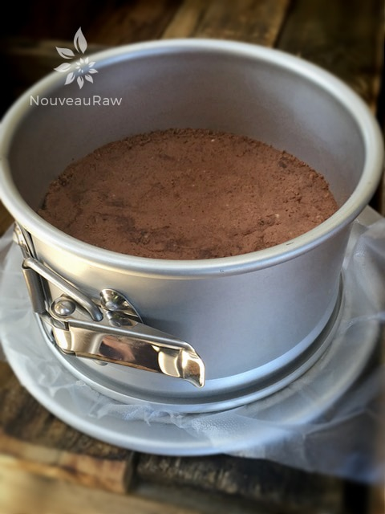
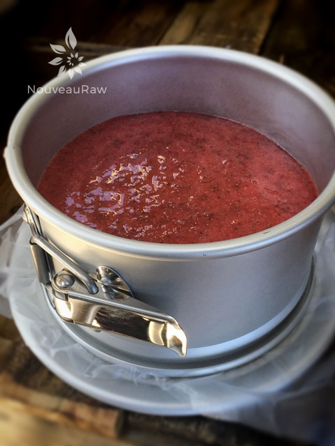
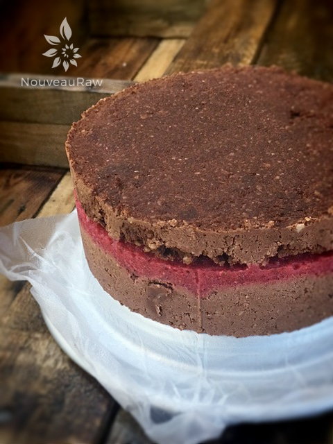
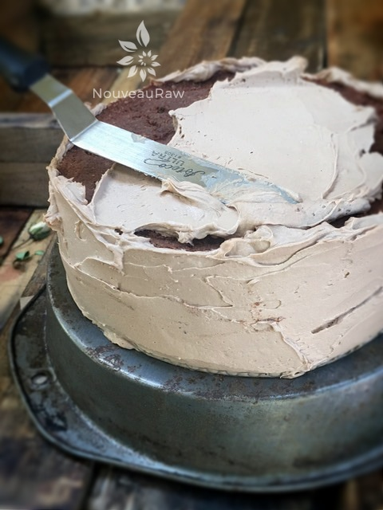
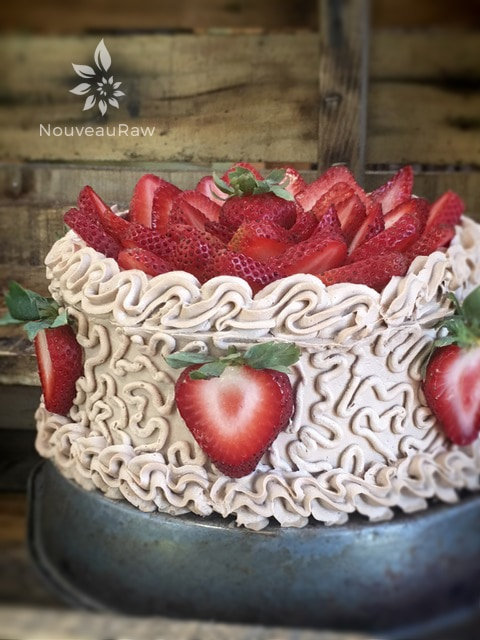
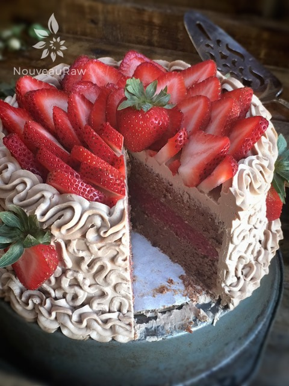
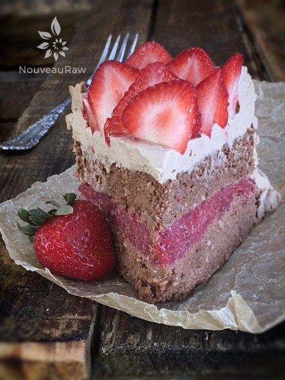

Hazelnut Cardamom and Strawberry Layered Cake

~ raw, vegan, gluten-free ~
This cake just “sort of happened”. Ever have moments like that happen to you in the kitchen? It all started with some fresh almond pulp that was sending me subliminal messages in my sleep that I needed to use it for something.
A few days later, I was at Costco and low-and-behold, they had organic strawberries!! I am becoming more and more impressed with their selection of fruits and veggies. So I knew would be able to make my dream come to fruition. From there, it is all a blur.
For this recipe, I used fresh, moist almond pulp. You could use whole nuts, processed down to mealy texture but it will change this recipe completely. It will certainly be denser. So, play around and have fun with it, just realize it may not turn out the same.
This cake needs to be eaten right away or frozen. Bob actually preferred eating the cake basically frozen. It had sat at room temperature for about 15 minutes. The truth of the matter was that I had a slice of cake sitting on the counter for testing.
You see, I always have to sacrifice a slice or portion of any recipe that I make. So, for this cake, I cut a piece while it frozen to see how it would fare sitting out at room temp. I like to see how the texture is affected, if the frosting would get runny and so forth.
Bob walked by the cake and asked if he could have a taste. How can I possibly tell that man “no”. hehe I always set a timer so that I remember to check my test piece. At 30 minutes, the timer went off. I walked over to where I HAD put the piece of cake and …. it was gone. I went on a hunt for it and in the living room, on the floor, next to Bob’s chair, sat the plate….empty…. not even a crumb!
Well fiddle, there went that test. haha But then, I guess that it better to find an empty plate on the floor than a plate with a piece of cake on that is only minus one bite…right? So, I started my test over and here are the results. After 30 minutes of sitting at the room temperature of 73 degrees, the cake part was starting to get a bit mushy, party due to the juices from the jam seeping into it. The frosting held up wonderfully. So, my recommendation is to eat the cake anywhere from 15-30 minutes after taking it out of the freezer. Return the leftovers immediately to the freezer.
Yields 9″ cake pan
Dry ingredients:
- 2 cups hazelnuts, soaked & dehydrated
- 3/4 cup raw cacao powder
- 3/4 tsp ground cardamom
- 1/4 tsp Himalayan pink salt
Wet ingredients:
Strawberry layer:
- 3 cups organic strawberries
- 1 Tbsp maple syrup
- 1 Tbsp chia seeds
Preparation:
Cake:
- In a food processor, fitted with the “S” blade, pulse the hazelnuts along with the cacao, cardamom and salt, till the hazelnuts are broken down into small pieces.
- Add almond pulp, honey, and lemon juice. Hold off on the almond milk… only add this to the recipe if the texture is dry and not holding together.
- If needed, add 1/4 cup at a time.
- Almond pulp will always vary in moistness, this is why I use the almond milk for adjusting.
- Mix everything together till well combined.
- To make this cake vegan, replace the honey with a thick sweetener.
- Press half of the cake batter into plastic-wrap lined cake pan. Set the other half aside and cover with plastic.
Strawberry layer:
- In the blender or food processor, combine the strawberries, maple syrup, and chia seeds together. Blend until smooth. I recommend fresh because frozen strawberries will release quite a bit of liquid and make the cake soggy.
- Pour over the first layer of the cake, spread evenly and place in the freezer for 4+ hours or until frozen.
Assembly:
- Remove the frozen cake from the freezer and add the remaining cake batter on top of the strawberry layer. Press the dough down evenly.
- Return to freezer for 4+ hours or until frozen.
- Frost (I used “Milk” Chocolate Cake Frosting) and eat right away or keep in freezer. When ready to eat, allow to thaw for about 15 minutes. If left out to warm completely to room temperature, the strawberry layer will seep into the cake and make it very soggy and mushy.
Additional Cake Tips:
- How to frost a cake. Click here.
- How to slice a cake. Click here.
- How much frosting is needed for a cake? Click here.
- Need a basic white frosting recipe? Click here.

After pressing the bottom layer of the cake batter in, pour the strawberry puree over the cake. Tap the pan on the counter lightly to work out any air bubbles and so it will rest evenly. Place in the freezer till firm.

Once the strawberry layer is hard, place the top layer of the cake on top. Gently press evenly and firmly. Return to the freezer for 4+ hours, or until frozen. This will help with frosting.

Now we are ready to put the first, thin layer of frosting on the cake. This is what we call the “crumb” layer. It looks a bit rough at first, but the second layer of frosting will more smooth. Place the cake back in the freezer for about 15 minutes.

Please click on the link above where I show you in more detail on how to frost a cake if you need a little extra guidance. Have fun being creative in how you decorate your cake. There isn’t such a thing as a wrong way.



I first made this cake back in 2013. Below are a couple of old photos of that cake. I just wanted to show you a bit of a different look.
© AmieSue.com